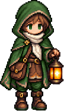
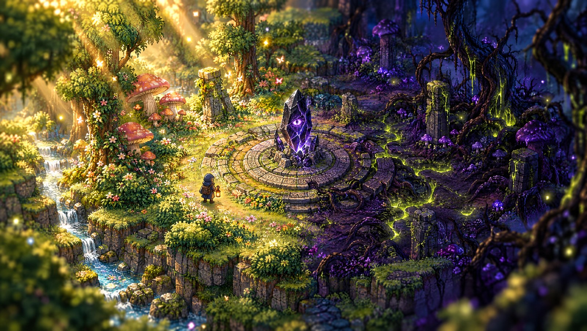
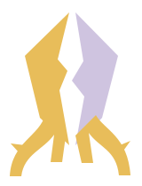
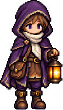
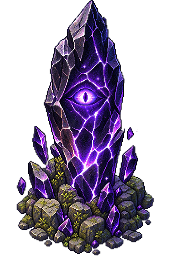

Bloom
Wake the Knight.
Destroy the shards. Free T.K. and Lenny from what the gem left behind.
Golden day. Flowers reclaim the ground.


AmulithMade at Knight Hacks IX
The roots remember.
A broken thing is still listening. A portable forest game about what a hand chooses to hold, and what it learns to let go.
Play AmulithGame concept art, not a gameplay capture
The gem shattered. Its pieces sank into the soil, and a forest grew too fast. Lenny is free, but T.K. lies beneath the moss. The consciousness left behind is Amulith, the Remnant.
You decide what happens to its shards.
Bloom breaks the shards to wake the Knight. Blight returns them to the voice beneath the roots. Start with a mouse, keyboard or controller.
Explore as the Wanderer. Pulse to reclaim the ground, turn your lantern to reveal shards, and watch for the other faction.
Ask Amulith for a direction, or talk to the six forest spirits. Branching conversations pause the world while you read. Keep what you hear in your chronicle.
The portable story edition bundles its authored dialogue, music and art. No Jetson, webcam, Arduino, account or AI service is required. Install it from a supporting desktop browser, or play here.
Bloom
Destroy the shards. Free T.K. and Lenny from what the gem left behind.
Golden day. Flowers reclaim the ground.
Blight
Gather the shards. Keep the forest corrupted, and the Remnant awake.
Violet night. Thorns and veins take root.
The original Knight Hacks build
Amulith began on a borrowed NVIDIA Jetson Orin Nano. The original build combined local Qwen inference, a shrine camera and an Arduino relic. After the hardware was returned, the game gained this portable story edition.
Explore the source on GitHub
The Jetson build used CUDA llama.cpp and constrained Qwen replies. This browser edition uses 696 unique authored beats, including faction-specific conversations and endings. It performs no live inference.
The original detector learned the empty shrine and combined foreground, color, shape and a pretrained embedding. No vision model was trained or published for it. Manual faction choice remains available.
The Arduino interface provided a lantern knob, ask button and LED heartbeat. Keyboard and controller controls cover those actions in the portable edition.
Three.js, TypeScript and Vite render Shrine Grove, Mushroom Hollow and Rootdeep. A* enemies, land conversion, lantern risk, two faction endings and a browser chronicle remain part of play.
The original hardware implementation remains in the source. The portable edition has bundled music and subtitles. Live speech synthesis was planned during the hackathon and is not claimed as a shipped feature.
Juan Castillo Lawrence Capistrano
Built at Knight Hacks IX at UCF. A forest on a screen, a shrine on a table, and a mind inside the stone.
Built at Knight Hacks IX. The saved project was not finalized as a competition submission.